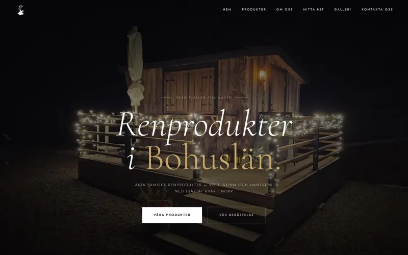
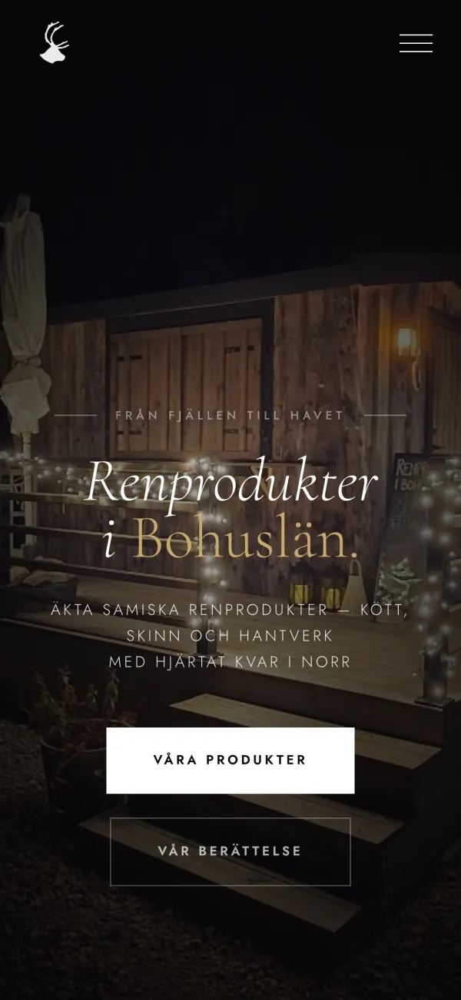

Dator

Renprodukter Bohuslän
Hemsida för en viltvagn med äkta samiska renprodukter – kött, skinn och hantverk.
Visar produkterna, berättelsen bakom och var man hittar dem.
renprodukterbohuslan.se
Mobil

Jag pluggar teknik på gymnasiet och bygger hemsidor åt företag vid sidan av skolan.
Här är ett urval av mina senaste projekt.
Jag byggde min första hemsida när jag var 12. Pappa hade precis startat sin arboristfirma och behövde en sida, och jag blev helt överlycklig när jag fick sitta och klura ut hur man gjorde.
Allt fick jag lära mig från grunden, från hur en sida ska se ut till hur den ska vara uppbyggd för att vara lätt att använda.
Sen insåg jag att en snygg hemsida inte räcker för att den ska uppfylla sitt syfte, den måste synas på Google också. Här lärde jag mig mycket om SEO och konsten att skapa värdefullt innehåll, som faktiskt syns i sökresultat. Jag byggde om hemsidan. Den här gången räckte det inte att pappa var nöjd, jag behövde imponera på Google också.
Idag pluggar jag teknik på gymnasiet med digitalt skapande som inriktning. Men mina planer tar inte slut efter studenten. Intresset finns kvar, och jag vill fortsätta bygga bättre och bättre hemsidor!
Vi pratar och bollar lite idéer.
Jag bygger sidan.
Du tittar och vi justerar tills du är nöjd.
Ring eller mejla gärna, så tar vi det därifrån:)